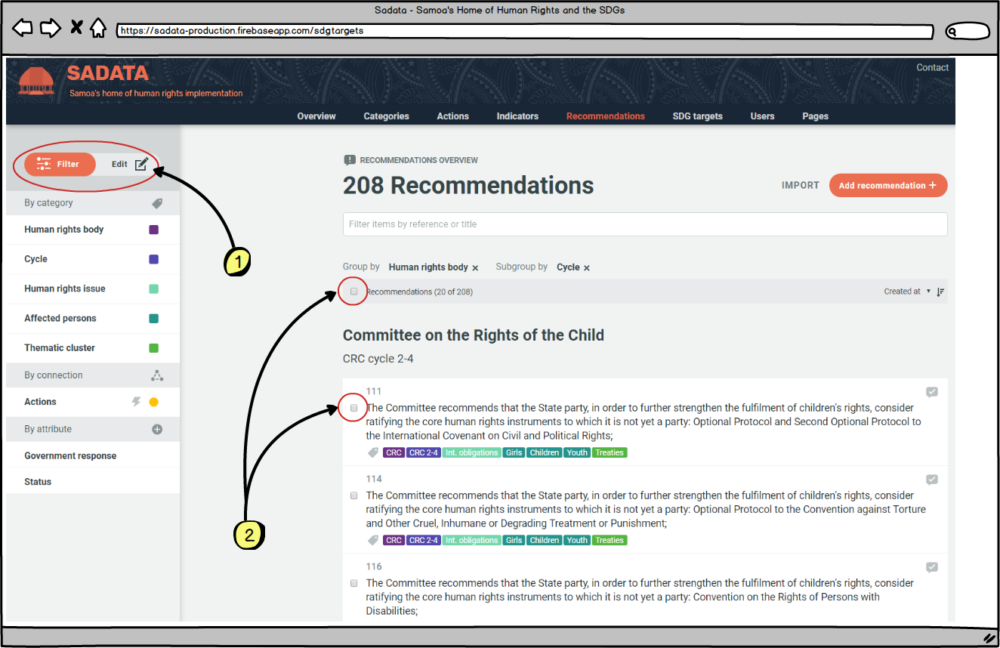

4.2 Overview: adding & editing
One of the roles of Administrators and Managers is adding and editing the base content, such as:
- Recommendations
- Actions
- Indicators
- Thematic cluster titles
- Categories
- Actions
- Affected persons
There are a variety of methods of adding and editing content, including through batch importing. These processes are outlined in the relevant pages later in chapters 4.3 to 4.7. It is also important for Administrators and Managers to understand the difference between the 'edit' and 'filter' modes.
'Edit' v 'Filter' Mode
'Filter' mode is available to all users and visitors and allows for actions, indicators, recommendations or SDG targets to be filtered by category, connected category, connection or status (see Glossary (1.4) for details).

As soon as an Administrator or Manager is logged in this view changes to:

-
The filter list now becomes a filter or edit list, with filter selected as the default (coloured orange)
-
Options to select the page of results or individual results now also appear.
As soon as any of the results are selected by the user the mode will automatically switch from 'filter' to 'edit'

Once the Administrator or Manager is in 'Edit' mode they can update the selected entries (either Actions, Indicators, Recommendations or SDG Targets) and change the entry associations (e.g. the category tags, actions, indicators, thematic cluster). This allows the Administrator to edit entries in bulk. The full details of what is possible for each type of entry is discussed in the chapters below and is only applicable to Administrators and Managers.